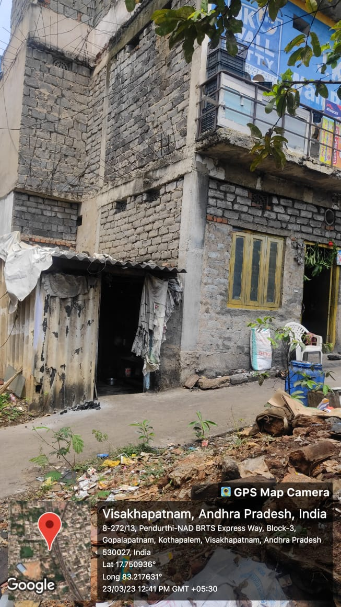

Gopalapatnam

Gopalapatnam is a slum area located in the city of Visakhapatnam under the jurisdiction of GVMC (Greater Visakhapatnam Municipal Corporation). The slum area is home to around 20,000 residents and faces several challenges that impact the well-being of its residents.
Major Problems
- Unemployment: Many residents in Gopalapatnam are daily wage workers who rely on casual labour for their livelihood. With the ongoing COVID-19 pandemic and the resulting economic slowdown, many have lost their jobs and are struggling to make ends meet.
- Substance abuse: Substance abuse is a growing problem in Gopalapatnam, particularly among young people. Lack of educational and job opportunities, peer pressure, and stress are some of the reasons why many residents turn to drugs and alcohol.
- Crime: Gopalapatnam is known to have a high crime rate, including theft, burglary, and violence. Lack of policing and adequate law enforcement measures have contributed to the prevalence of crime in the area.
- Child labour: Many children in Gopalapatnam are forced to work in hazardous and exploitative conditions to support their families. This can impact their physical and mental health, and prevent them from accessing education and a better future.